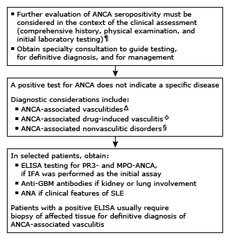

Initial evaluation of a positive test for ANCA in adults*

This algorithm is intended for use with additional UpToDate content on the utility of testing for ANCA in the evaluation of vasculitis.
ANCA: antineutrophil cytoplasmic antibody; ELISA: enzyme-linked immunosorbent assay; PR3-ANCA: antiproteinase 3 antineutrophil cytoplasmic antibody; MPO-ANCA: antimyeloperoxidase antineutrophil cytoplasmic antibody; IFA: immunofluorescence assay; anti-GBM: anti-glomerular basement membrane; ANA: antinuclear antibody; SLE: systemic lupus erythematosus; C-ANCA: cytoplasmic-antineutrophil cytoplasmic antibody.
* There are no standardized reference values for normal ranges for the ELISA tests for ANCA. Generally, for the IFA (if reported), a titer <1:20 is not clinically significant. Interpretation of a specific abnormal result should be based upon the reference range reported by the laboratory and the clinical assessment.
¶ The interpretation of a positive (or negative) test for ANCA will be substantially influenced by the a priori estimated probability of ANCA-associated vasculitis, made on clinical grounds.
Δ ANCA-associated vasculitis:
Microscopic polyangiitis
Granulomatosis with polyangiitis
Eosinophilic granulomatosis with polyangiitis (Churg-Strauss)
Recreational drugs – cocaine alone or adulterated with levamisole (in illegally acquired cocaine)
§ ANCA-associated nonvasculitic disorders:
SLE and gastrointestinal disorders (ie, inflammatory bowel disease, autoimmune hepatitis) can be associated with a positive IFA and, rarely, with a positive ELISA
Bacteremia can cause positive tests for C-ANCA and for PR3-ANCA